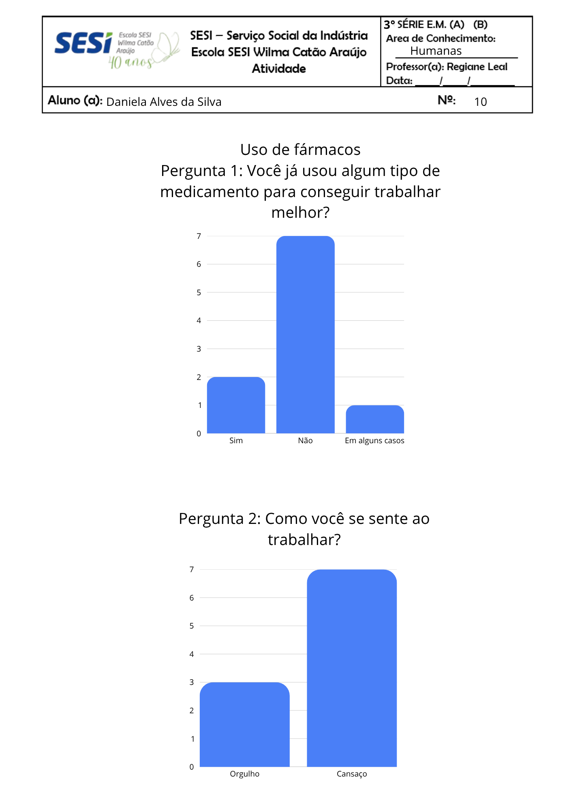
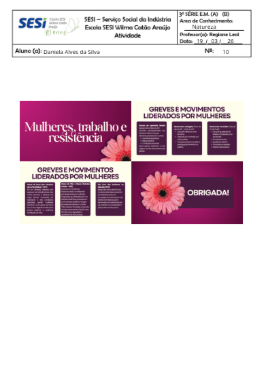
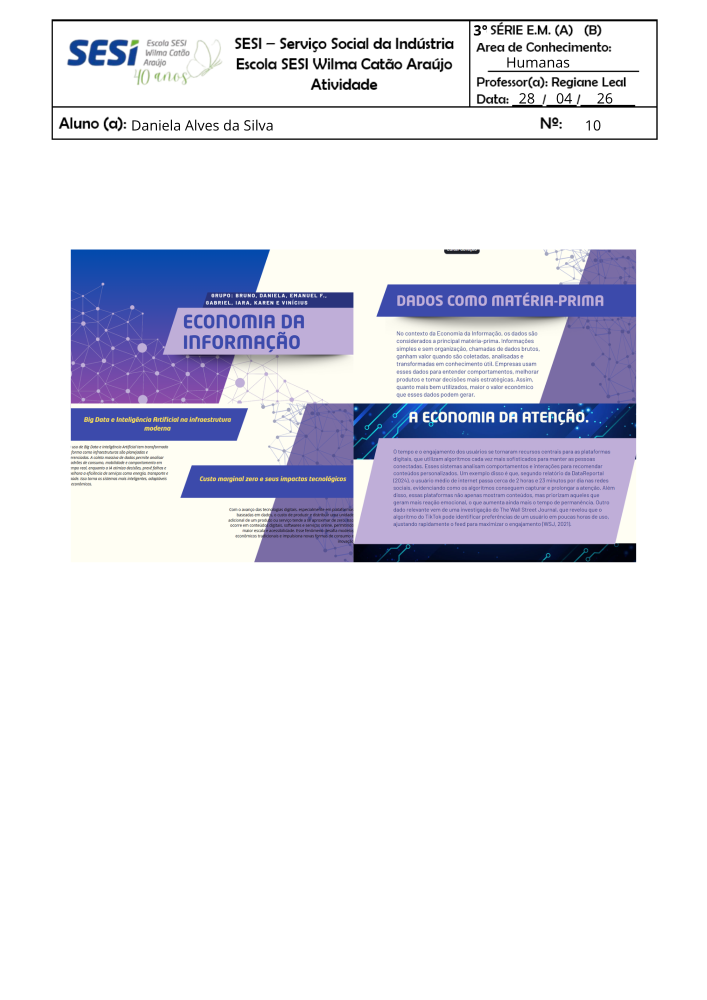
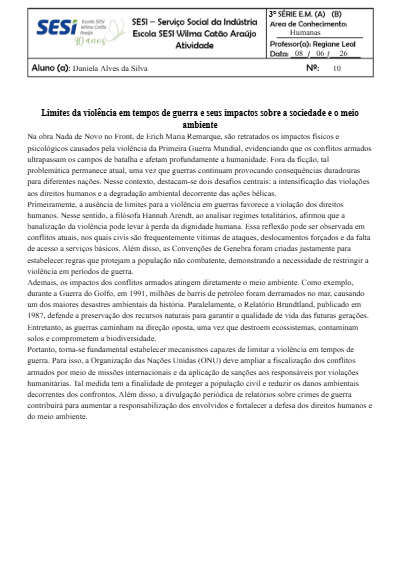
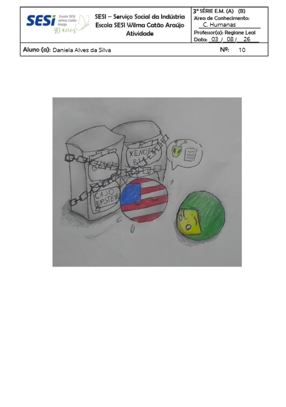
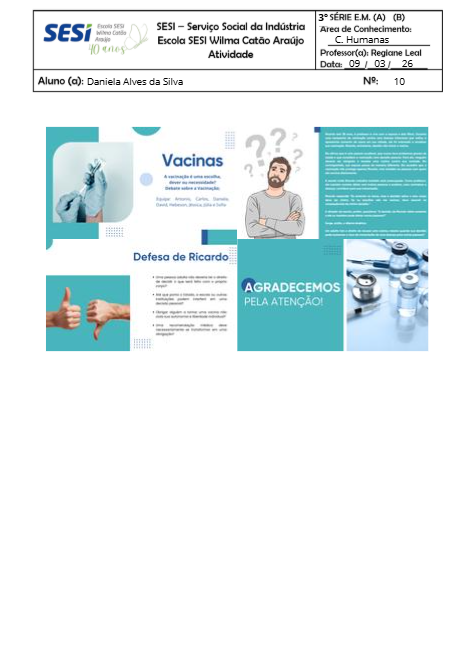
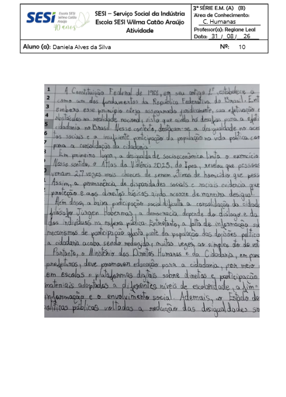

Mapa mental de racismo ambiental (19/02)

Atividade de pesquisa do trabalho

Mapa mental sobre as principais ideias de alguns filósofos (09/02)

Slides Mulheres e Gênero (19/03)

Mapa mental de racismo ambiental (19/02)
Atividade de pesquisa do trabalho

Mapa mental sobre as principais ideias de alguns filósofos (09/02)
Slides Mulheres e Gênero (19/03)

Mapa mental - Nova Ordem Mundial (16/04)
A influência das tecnologias digitais em crises e movimentos sociais (20/04)
Atividade de Pesquisa – Ensino Médio: "No século XXI, quem controla a informação, controla o mundo." (28/04)

Slides sobre as raízes históricas da violência estrutural e simbólica no Brasil (04/05)

Redação sobre Limites da violência em tempos de guerra (08/06)

Produção de uma charge, utilizando metáfora para representar e criticar a política atual. (03/08)

Trabalho sobre bioética. (20/08)

Redação sobre os problemas da efetivação da cidadania no Brasil. (31/08)p>
